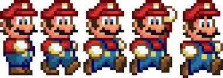
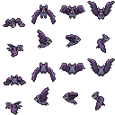

Sprites
¡Bienvenido de vuelta! Veo que sobreviviste a la primera tarea. ¿Cómo te fue? El jefe a veces se emociona un poco con sus proyectos, ¿no crees?
Esperemos que esta vez no le eche mucha crema a los tacos.
Oh mira, hablando de trabajo...
¡Raúl! ¿Qué es lo que tanto alegas acerca de crema y tacos? [Emm... nada señor... ¡Que su orden de tacos para desayunar ya esta lista!] Ah! Excelente! Con mucha crema justo como a mí me gustan.
Novato! Magníficas noticias! Les encanto el prototipo de fondos que desarrollaste. Pero ahora quieren que este un poco más interesante. Y dentro de su concepto de interesante estan los dibujos animados o como mejor los conocemos en la industria: "Sprites". Así que tu proxima tarea es incorporar Sprites al proyecto en desarrollo y hacerlo más "interesante".
Nuevamente no te preocupes por los detalles arquitectónicos. Somos una empresa con numerosos años de experencia por lo que recibiras soporte guiado así como diseños de clases sólidos.
Task Information
A2-Sprites
Descripción
'A2-Sprites' es la segunda iteración del prototipo previamente desarrollado. Debe demostrar la implementación de un sistema de manejo de Sprites aplicandose en al menos un Sprite. De ser posible también se busca que cuente con elementos de jugabilidad como un personaje controlable y enemigos u objetivos.
Se espera la entrega para el día: Viernes 12 de Marzo del 2019

Estructura
Estructura de Partida
La estructura de donde partimos el proyecto es el esqueleto del juego desarrollado en la entrega pasada. Notese que el UML pueda diferir con el código mismo, sin embargo sigue siendo una buena herramienta para explicar los cambios al proyecto.

Estructura Nuevo
Agregaremos un módulo de Sprites formado por un par de subclases. Esto hará posible la inclusión de Sprites de diferentes fuentes y formas.

Sprites
Como ya sabrás, la mágia detrás de las animaciones es una colección de imagenes cuidadosamente dibujadas de tal modo que cuando las muestras secuencialmente una después de otra, dan la aparición de movimiento o cambio.

Sprites
Para lograr este efecto basta con tener una arreglo de imagenes, por ejemplo de BufferedImage's cargados tal como lo hicimos con el fondo, y renderizar un elemento del arreglo a la vez. Para ajustar la velocidad de animación, podemos tener un contador/índice de la subimagen de la animación y hacer que solo incremente cada 5 actualizaciones/renders.
Sin embargo, muchos de los verdaderos retos en esta área son respecto a la flexibilidad de las animaciones, rendimiento, reutilización de los Sprites y cargado de los famosos "SpriteSheets". Los SpriteSheets son imagenes en donde se guardan todas las subimagenes de una animación, o conjunto de animaciones, en una forma ordenada para evitar cargar múltiples archivos. Esta característica los hace ideales para ahorrar espacio físico y por lo tanto son muy populares.
Sprites
Tomando en cuenta lo previamente mencionado, se implementará una estructura/sistema, que ha sido desarrollado y documentado previamente en TecLabs, que facilitará la solución de los problemas.
Esta estructura es flexible y puede adaptarse para acomodar diversas situaciones, pero no es la única que existe. Es una cuestión de diseñar con ingenio lo que uno necesite para su proyecto de software.

CachedSprite
Empezemos entonces con nuestra primera clase encargada de alamcenar las subimagenes de un sprite.
Esta clase no tiene mucho más que la simple asignación del ArrayList en el método constructor y un método de acceso getSubImg(int i) a la subimagen en el ArrayList usando images.get(i)
- En el constructor recibimos la lista de subimagenes List<BufferedImage> images y se lo asignamos a nuestra variable privada.
- Similarmente en size() regresamos el propio tamaño de la lista.
- En el método get(int index) usamos el propio método get() de la lista para obtener la imagen.
¿Por qué el nombre CachedSprite?
Porque esta clase que parece casi vacía guarda esencialmente solo las imagenes de nuestro sprite. Y cada vez que queramos instancia un objeto que ocupe el mismo sprite podemos pasarle nuestro CachedSprite creado.
AnimationSprite
Esta clase es más práctica, ya que representa un Sprite animado que podemos utilizar como componente en cualquier clase de nuestro videojuego. Como en un enemigo por ejemplo.
Esta clase es un poco más complicada que las demás.
- Asignar los valores recibidos las variables correspondientes en el constructor(), setX(), setY(), setAnimSpd().
- En render(g) vamos a dibujar con drawImage(img,x,y,w,h,null) en la posición correspondiente, la subimagen 'imageIndex' del CachedSprite usando su metodo get().
- En update() está lo más jugoso. Aquí incrementamos el ínidice del sprite dada la velocidad de animación puesta. Por el momento no sabemos cuantas veces se ejecuta el update() por segundo 'UPS' pero vá entre unas 30 veces por segundo y en juegos más estables siempre está alrededor de 60. Si nuestro juego tiene 60ups y queremos 5 imagenes por segundo de un sprite, tendríamos que contar 12 updates (60/5=12) para incrementar nuestra imageIndex. Por lo que pondremos en update() un contador 'animCount', y un if para checar que un cuando llegue al 'topCount', reiniciamos el contador e incrementamos 'imageIndex'. (También hay que checar que imageIndex no se salga de la cantidad posible de imagenes. Por eso es necesario el método .size() de CachedSprite).
- No hay que olvidarnos de darle un valor a 'topCount'. Ya que esto pasa cuando asignamos una velocidad podemos ponerlo en setAnimSpd(int spd), y lo calculamos como topCount = ups/spd; En donde ahorita ups es un valor al tanteo, como 60 por ejemplo.
SpriteBuilder
Finalmente, haz una clase SpriteBuilder en la cual usaremos uno nuevo patrón de diseño, el patrón Builder. Este patrón sirve para facilitar la instanciación flexible de objetos con configuraciones. En nuestro caso, esos objetos son CachedSprites que vienen de componer subimagenes cargadas de un SpriteSheet.
- En el método constructor cargamos la imagen del spritesheet como lo hemos hecho anteriormente y asignamos la anchura y altura de las celdas a las variables de nuestra clase.
- En el método addSubImage(int,int) vamos a agregar una subimagen del SpriteSheet a nuestro objeto CachedSprite que estamos construyendo. Para eso usamos el método .subimage(x,y,w,h) de BufferedImage. Esta función devuelve en forma de BufferedImage la copia de la sección seleccionada como parametro. Esta sección la pudemos agregar a nuestra lista de subimages. Al final este metodo devuelve su propia instance "return this;" y se explicara a continuación el ¿por qué?
- Por último, en build(), simplemente creamos un nuevo objeto CachedSprite pasandole la lista de imagenes como parámetro y devolvemos el objeto.
Demostración
Para poner en uso lo que acabamos de programar invoquemos a la vida un pequeño murcielgo. Descarga el sprite que esta en la sección de recursos, descomprimelo y pon la imagen bat-32x32.png en la carpeta de recursos res de eclipse.
Seguido de esto, en el LevelController que estes usando, agrega una variable del tipo AnimationSprite sprite. En el constructor declara y crea un nuevo SpriteBuilder pasando como argumento para 'path' un string con la ruta al archivo bat-32x32, y para los argumentos cellW, y cellH pasa el valor 32 ya que sabemos que cada subimagen del SpriteSheet tiene una dimensión 32x32. Si quieres comprobarlo tu mismo, abre el archivo en un visualizador de imagenes o Photoshop.
Con nuestro spriteBuilder carguemos la siguiente secuencia de imagenes:
Demostración
Usaremos las últimas 3 subimagenes del primer renglón. Si vemos las subimagenes como elementos de una matriz, podemos ver que las coordenadas de ellas son (1,0),(2,0) y (3,0) en la forma (i,j) en donde i es la columna y j el renglón. Por lo que vamos a solicitarle al spriteBuilder estas mismas subimagenes.

SpriteBuilder spriteBuilder;
spriteBuilder.addSubImage(1,0)
.addSubImage(2,0)
.addSubimage(3,0);
Aquí es donde se vé la razón de que addSubImage() regresara una referencia al mismo objeto. Como regresa la referencia, podemos invocar el método de nuevo justamente después del anterior, haciendo muy cómodo el uso.
Al final usamos el método .build() para obtener el CachedImage y guardarlo en una variable.
Demostración
Por último instancia un objeto del tipo AnimationSprite, (recuerda que no hemos salido del constructor), y pásale el objeto CachedSprite, algunas coordenadas y una anchura y altura como de 100 pixeles.
Utiliza el método setAnimSpd(5) para darle moviemiento al sprite.
En render(g) invoca el método render del animationSprite y en update() invoca el método update().
Corre el juego para ver el resultado.
Adicionalmete puedes crear una clase del murcielago para hacer que se mueva independientemente que cada murcielago tenga una AnimationSprite. El CachedSprite estaría guardado en el LevelController y el mismo objeto se lo pasamos a múltiples murcielagos, haciendo eficiente su reutilización.
También se te recomienda investigar más acerca de las AffineTransformation's para darle efectos de transformación, como rotación a las imagenes e incluirlo al AnimationSprite.
References and Resources
Links
- Sprite de Murcielago: bat-1.2.zip
...Hmmm esta salsa verde sí está bien sabrosa...
!Qué!.. ¿Qué haces aquí? !Ponte a trabajar y no me interrumpas sin avisar!